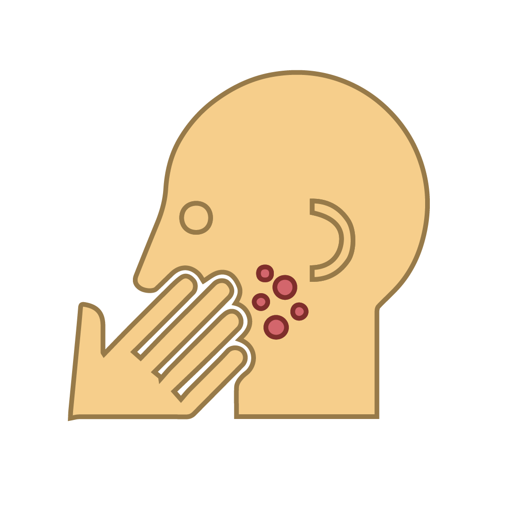
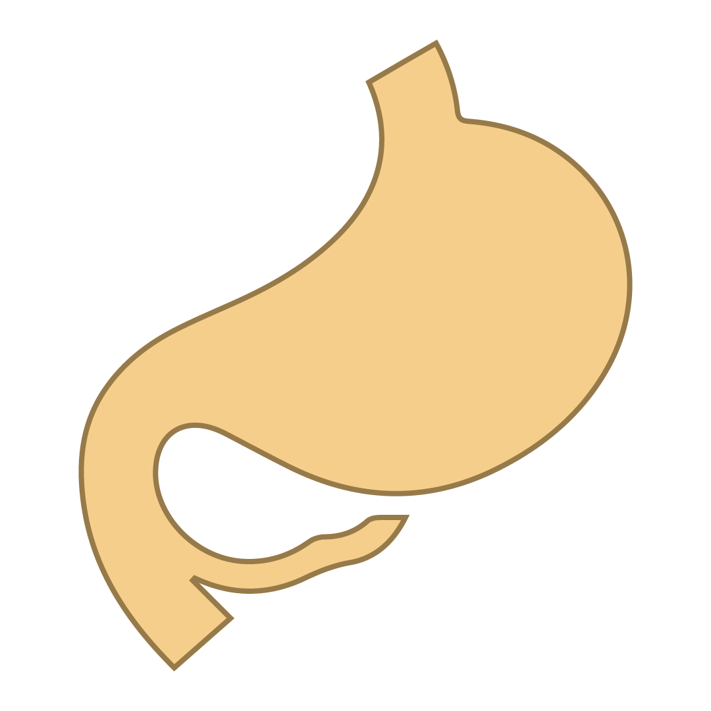
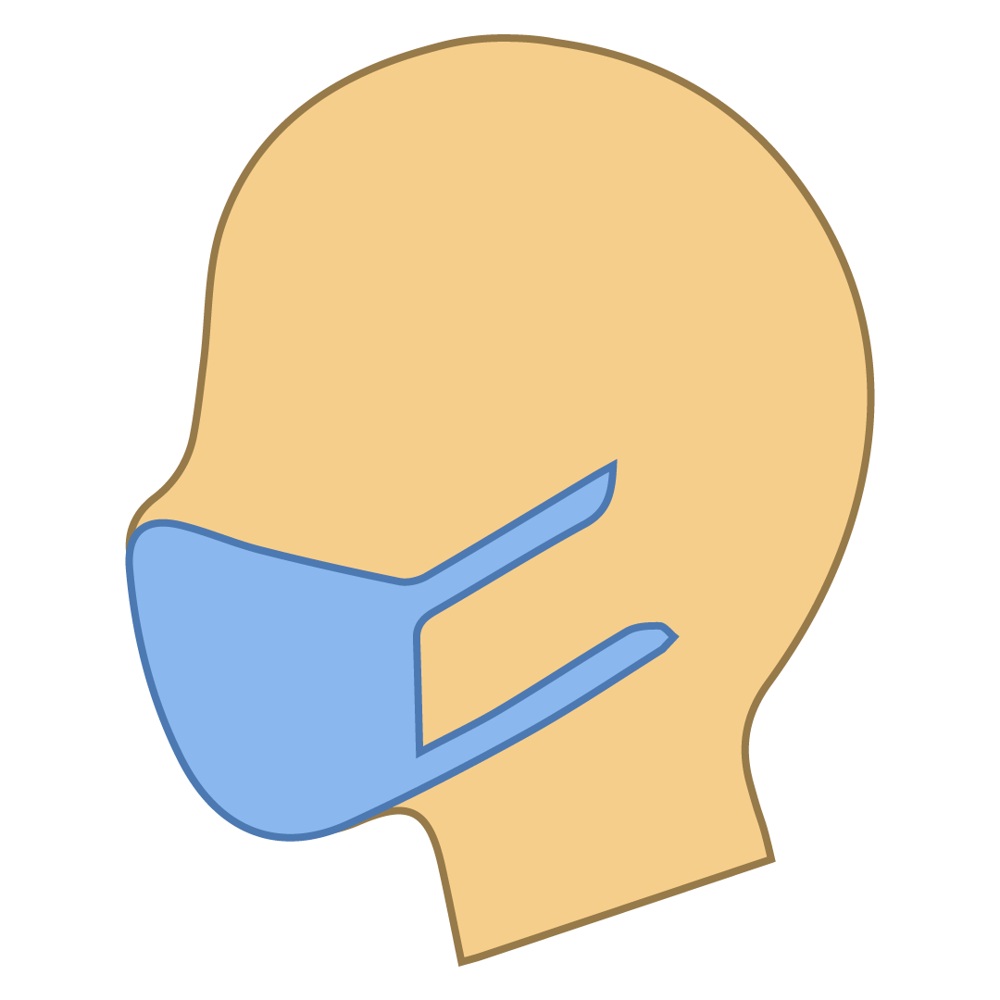
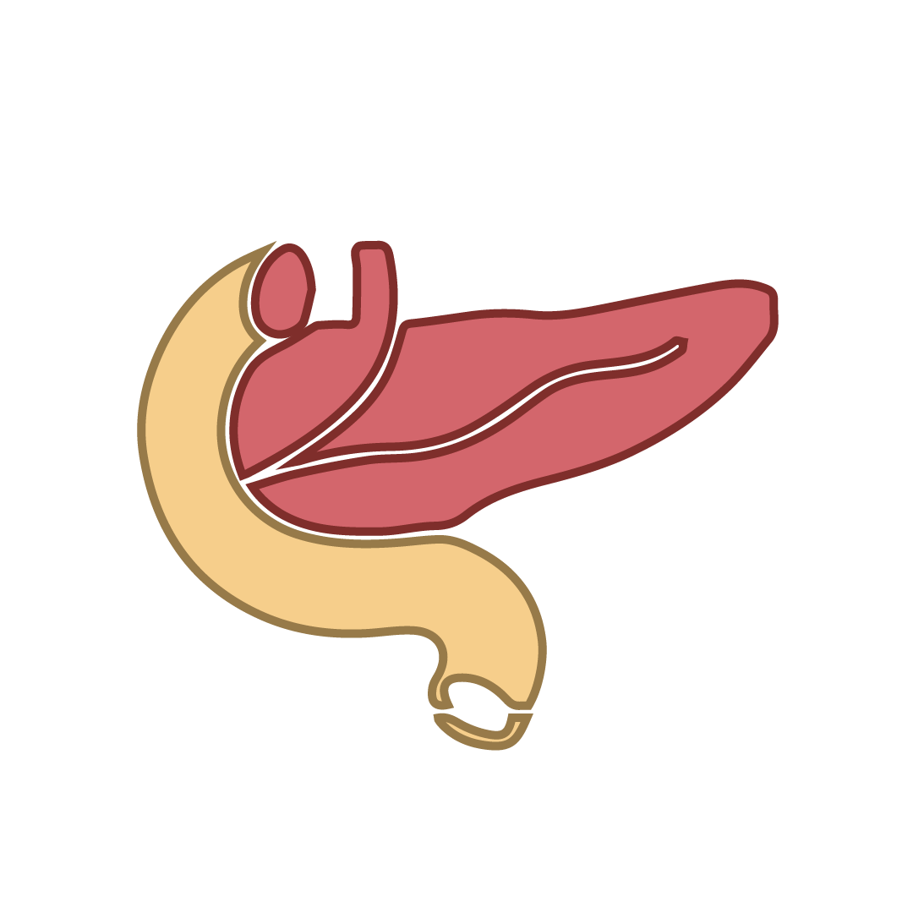

SPECIALIZARI

Medicina Generala
Se concentrează pe tratarea unei game largi de afecțiuni și boli
acute și cronice
Ginecologie
Este ramura medicinei care se ocupă cu fiziologia și tratarea
afecțiunilor aparatului genital feminin

Dermatologie
Reprezintă o specialitate medicală ce se ocupă de totalitatea
fenomenelor patologice care se produc la nivelul organului cutanat
Psihologie
Este stiinta care studiaza comportamentul si mintea umana

Pediatrie
Este o specialitate medicală care se ocupă cu studiul și tratarea
bolilor întâlnite la copii

Cardiologie
Cuprinde diagnosticul și tratamentul bolilor cardiace congenitale,
bolii cardiace ischemice.

Gastroenterologie
Este specialitatea medicală care se ocupă cu prevenirea,
depistarea, diagnosticarea și tratarea bolilor tubului digestiv și
ale organelor anexe

Pneumologie
Este o ramură a medicinei care studiază aparatul respirator în
condiții normale și patologice

Neurologie
Structurile organice ce țin de domeniul neurologiei sunt - pe de o
parte - creierul, măduva spinării
Dietetica
Este ramura a medicinei care se ocupă cu studiul și stabilirea
regimurilor alimentare.

Diabet zaharat si boli metabolice
Se ocupă, în principal, de boli cronice netransmisibile precum
diabetul zaharat, obezitatea
Homeopatie
Este o metoda de tratament care stimuleaza tendinta naturala de
vindecare a organismului